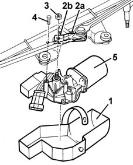

5050B42 WINDSCREEN WIPER MOTOR - R+R
- Path
- Procedures > 50 AUXILIARY UNITS > 5050 SCREEN WASHERS AND HEADLAMP WASH/WIPE > 5050B WINDSCREEN WASH/WIPE > 5050B42 WINDSCREEN WIPER MOTOR - R+R
- Kind
- repair procedure (removal / refitting; the operation number is the code)
- Applies to
- all engines; all production periods
- Interactive page
- https://sloeber94.github.io/elrnDB-fMltpl/en/#/2891849
Applies to: all engines; production: fino a 05/99, da 09/03, da 06/99 a 03/02, da 04/02 a 08/03, fino a 05/04
 Removing
Removing
 Refitting
RefittingOp. 5050B32 WINDSCREEN WIPER ARM/S - R+R
(left and right sides)
Op. 7055A18 L/H OR R/H SIDE RUBBING STRIP DECORATIVE SEAL - R+R
.
Op. 7040H30 FRONT PILLAR TRIM - R R
.
Op. 7055A20 L/H OR R/H SIDE RUBBING STRIP DECORATIVE SEAL - R+R
.
Op. 5050B38 WINDSCREEN WIPER ASSEMBLY - R+R OR REPAIR
1. Remove the motor protective boot.
2. Mark the position (2a) of the control lever (2b).
3. Undo the centre nut.
4. Unscrew the motor retaining bolt.
5. Remove the windscreen wiper motor.

Applies to: all engines; production: fino a 05/99, da 09/03, da 06/99 a 03/02, da 04/02 a 08/03, fino a 05/04
Refitting
RemovingCheck that the windscreen wiper motor is not damaged and, if necessary, conduct an electrical test on it.
Before refitting the motor, zero it by temporarily connecting it to the connector and activating it through the front windscreen wiper control.
Refit the zeroed motor with the control lever in the position marked during the dismantling.
Tighten the bolts fixing the motor.
Tighten the centre nut.
Refit the motor protective boot.
Op. 5050B38 WINDSCREEN WIPER ASSEMBLY - R+R OR REPAIR
.
Op. 7055A20 L/H OR R/H SIDE RUBBING STRIP DECORATIVE SEAL - R+R
.
Op. 7040H30 FRONT PILLAR TRIM - R R
.
Op. 7055A18 L/H OR R/H SIDE RUBBING STRIP DECORATIVE SEAL - R+R
.
Op. 5050B32 WINDSCREEN WIPER ARM/S - R+R
(left and right sides)
Check the operation of the windscreen wiper.
Applies to: all engines; production: da 06/04
Removing
RefittingOp. 5050B32 WINDSCREEN WIPER ARM/S - R+R
(left and right sides)
Op. 7055A18 L/H OR R/H SIDE RUBBING STRIP DECORATIVE SEAL - R+R
Op. 5050B38 WINDSCREEN WIPER ASSEMBLY - R+R OR REPAIR
1. Remove the motor protective boot.
2. Mark the position (2a) of the control lever (2b).
3. Undo the centre nut.
4. Undo the bolts fixing the motor.
5. Remove the windscreen wiper motor.
Applies to: all engines; production: da 06/04
Refitting
RemovingCheck that the windscreen wiper motor is not damaged and, if necessary, conduct an electrical test.
Before refitting the motor, zero it connecting it temporarily to the connector and activating it using the front windscreen wiper control.
Refit the zeroed motor, with the control lever in the position marked during the dismantling stage.
Tighten the bolts fixing the motor.
Tighten the centre nut.
Refit the motor protective boot.
Op. 5050B38 WINDSCREEN WIPER ASSEMBLY - R+R OR REPAIR
Op. 7055A18 L/H OR R/H SIDE RUBBING STRIP DECORATIVE SEAL - R+R
Op. 5050B32 WINDSCREEN WIPER ARM/S - R+R
(left and right sides)
Check that the windscreen wiper is working.
Topics linked from this page (5)
- 5050B32 windscreen wiper arm/s - r+r
- 5050B38 WINDSCREEN WIPER ASSEMBLY - R+R OR REPAIR
- 7040H30 front pillar trim - r r
- 7055A18 Windscreen base TRIM - R.R.
- 7055A20 FRONT TRIM under WINDSCREEN with main beam headlamps - R.R.